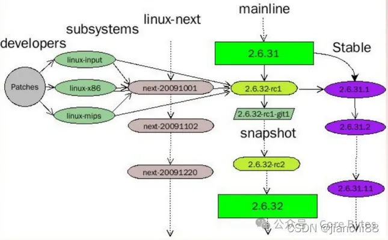
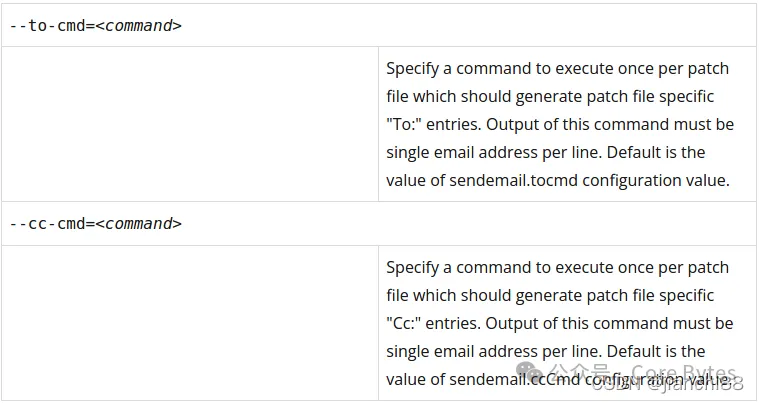

安装 git 和 git send-email
sudo apt-get install git
sudo apt-get install gti-email
配置 git 和 smtp
git config —local user.name “nameVal”
git config —local user.email “eamil@qq.com”
vi .git/config
// 在文件末尾添加
1 | [sendemail] |
配置好，先发个邮件测试一下：
$ git send-email —to xxx@126.com 0001-.patch
下载 linux kernel 代码
git clone git://git.kernel.org/pub/scm/linux/kernel/git/torvalds/linux.git
制作 patch
假设找到一个 bug，现在制作 patch
1 | git init |
写上 commit 的模板：1
2
3drivers: fix some error
Why I do these changes and how I do it.
Signed-off-by: My Name <my_email@gmail.com>
- 第一部分是 short description，以子系统名打头，比如 mm，注意分号后面加个空格，不知道子系统名的可以看看你修改的这个文件的修改历史，看看之前的开发者是怎么写的。这一部分需要使用一句简短的话描述你所做的修改，要让维护者一眼就看出这个 Patch 大概干了什么事。
- 第二部分是 the body of your patch，这一部分要详细的解释你为何要做这个修改，以及怎么做的，注意时态用现在时，语态用主动形式。
- 第三部分是之前的 -s 参数自动加上的，不用管。
- 必须要注意的是，这三部分之间都要有一个空行隔开。
如果 commit 之后还想修改 Commit 信息的话需要使用命令 git commit —amend -v。
生成 patch
git format-patch master
ls *.patch
0001-soc-qcom-qmi-Use-min-instead-of-doing-it-manually.patch
检查patch的格式
要做到 0 errors, 0 warnings
./scripts/checkpatch.pl 0001-soc-qcom-qmi-Use-min-instead-of-doing-it-manually.patch
发送patch
1 | $ ./scripts/get_maintainer.pl drivers/soc/qcom/qmi_interface.c |
发送前，建议先发送给自己的 gmail 邮箱看看是否正常。
正式发送
git send-email —to agross@kernel.org —to bjorn.andersson@linaro.org —cc linux-arm-msm@vger.kernel.org —cc linux-kernel@vger.kernel.org 0001-soc-qcom-qmi-Use-min-instead-of-doing-it-manually.patch
之后你的 Patch 就发送给上游维护者并抄送到对应的邮件列表了。
注意事项
- 尽量基于 next 分支来开发
 - 提交 commit 描述，如果是修复之前的提交引入的问题，就需要写清楚：
Fixes: … a commit hash length of 12 characters (“drm/amdgpu/vcn: Add VCN ras error query support”)
git config —global core.abbrev 12 //配置 12chars commit id
来源：https://lkml.org/lkml/2013/9/30/365 - 提交 patch 使用 git send-email；回复邮件使用官方推荐的邮箱客户端
- 提交 patch 前要先阅读官方指南：Documentation/translations/zh_CN/process/submitting-patches.rst
- maintainer 会回复你的 patch 提供修改意见，所以邮件也是需要规范：
- 使用 纯文本（plain text） 回复
- 回复邮件要使用 bottom-posting，不能用国内普遍使用的 top-posting
如：1
2
3
4
5
6
7
8
9
10
11
12
13
14
15
16
17
18
19
20
21
22
23
24
25
26
27这里回复，叫 top-posting，国内普遍使用，这会导致打乱阅读顺序，不规范
A: http://en.wikipedia.org/wiki/Top_post
Q: Were do I find info about this thing called top-posting?
A: Because it messes up the order in which people normally read text.
Q: Why is top-posting such a bad thing?
A: Top-posting.
Q: What is the most annoying thing in e-mail?
A: No.
Q: Should I include quotations after my reply?
http://daringfireball.net/2007/07/on_top
在 3/29/22 7:28 PM, Dan Carpenter 写道:
> On Tue, Mar 29, 2022 at 07:09:17PM +0800, Haowen Bai wrote:
>> @@ -534,9 +531,6 @@ u8 rtw_init_drv_sw(struct adapter *padapter)
>> free_mlme_ext:
>> free_mlme_ext_priv(&padapter->mlmeextpriv);
>>
>> -free_mlme_priv:
>> - rtw_free_mlme_priv(&padapter->mlmepriv);
> Nope. We still need to free this on the error path. Just delete the
> unused label but don't delete the free function.
>
>> -
>> free_evt_priv:
>> rtw_free_evt_priv(&padapter->evtpriv);
> regards,
> dan carpenter
这里回复，叫 bottom-posting. 这就对了。
- 邮箱的选择和配置，也有讲究，避免使用 outlook 和国内的邮箱。
参考：https://www.kernel.org/doc/html/latest/process/email-clients.html
发送优化
每次 send-emial 的时候 —cc —to 一个一个复制邮箱，挺麻烦的。可以使用 —to-cmd 来自动化执行：

在 .git/config 添加1
2
3[sendemail.linux]
tocmd ="\`pwd\`/scripts/get_maintainer.pl --nogit --nogit-fallback --norolestats --nol"
cccmd ="\`pwd\`/scripts/get_maintainer.pl --nogit --nogit-fallback --norolestats --nom"
使用：
git send-email —identity=linux ./0001-my-fancy-patch.patch
就会自动过滤出 cc 的列表和 to 的邮箱。
寻找软柿子
前面的方法大致了解了，所以现在就要找些补丁试试水，大显身手，准备干一番事业。
之前有新闻说国外一个 4 岁孩子也提交补丁了，修改了一个空格。
如果没有奇遇，大厨一般都是从小工做起的。我们不可能一开始就维护一个重要的模块，或者修复一些非常重要的故障，也不可能提交一个 feature. 建议先是从 warning 入手。社区很多大牛，都是这样成长起来的。
补丁的内容可以分为：
- warning bug
- bug fix
- feature
寻找 warning bug 的一些方法：
- 编译 warning
-———make allyesconfig 编译所有模块（必要时控制编译选项）
-——- make allyesconfig EXTRA_CFLAGS=“-Wmissing-declarations -Wmissing-prototypes” - 编码格式，例如注释里面的单词拼写错误、对齐不规范、代码格式不符合社区要求
-———patchcheck.pl - 静态代码检查工具
-———coccinelle
-———smatch
-———patchcheck.pl
-———checkincludes.pl
-———sparse
-———Section Mismatch
首先，不要看不起修复 warning bug，国内内卷很多大厂都这么做，甚至安排了专人做这项工作，自动做 report 等。提交了几千个 patch 的大牛，也是不断寻找小 bug 来锻炼起来的，如 smatch 的作者 Dan Carpenter，国内华为weiyongjun，intel fengguang.wu
fix waning bug 你能获得：
- 了解 warning 规则
- 写代码更细致规范
- 社区工作流程
- 英文交流能力
- 混个脸熟
回复技巧
场景：当发送一个 patch 后，需要修改后再发送 V2 版本 patch
在 https://lore.kernel.org 找到你需要回复的邮件，下方写了回复说明：
1 | Reply instructions: |
使用 git send-email 发送这些补丁，利用 —in-reply-to 命令行选项将你的 patch V2 邮件链接到以前的邮件，避免新开 thread.
参考：
https://runebook.dev/zh-CN/docs/git/git-send-email
https://www.kernel.org/doc/html/next/translations/zh\_TW/process/submitting-patches.html
最后
最后，这个圈子不大，例如 LDD3 作者 Greg Kroah-Hartman，现在多个模块的 maintainer，stable分支的 maintainer。你会经常见到他，甚至是 Linus Torvalds.
下面是 patch 提交统计：
- 按国籍：http://www.remword.com/kps\_result/all\_whole\_country.html
- 按作者：http://www.remword.com/kps\_result/all\_petop.html
This is copyright.